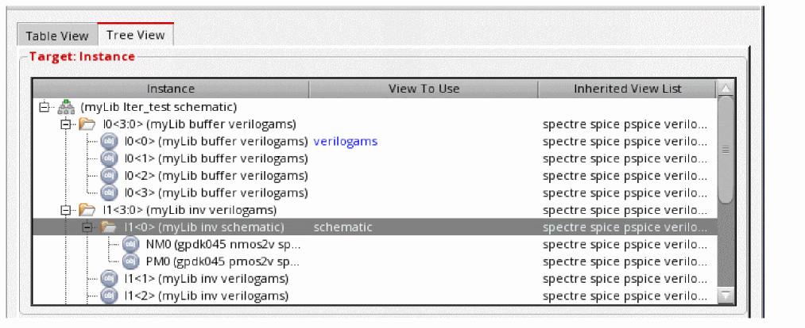
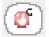

3
Changing Design Components
This chapter covers the following topics:
- Overview of Configuration Rules
- Defining Rules at the Global Level
- Defining Rules at the Cell Level
- Defining Rules at the Instance Level
- Defining Rules at the Occurrence Level
- Using Text Files in Your Configuration
- Using Constants
- Using Wildcards in a View List
- Changing Binding Data Color Definitions
- Saving Cell Bindings Table Data to a Text File
Overview of Configuration Rules
With the Hierarchy Editor, you can control the expansion of your design for any given purpose such as simulation or netlisting. You do this by creating and editing rules that define a design configuration. You can specify the following configuration rules in the Hierarchy Editor:
- Library Binding: Library binding determines the library from which a cell is obtained.
- View Binding: View binding determines which view of a cell is to be used in the configuration. For example, a cell might have different representations such as schematic, Verilog, and VHDL; the view binding determines which of these representations is used in the configuration.
- Stop Lists and Stop Points: Stop lists and stop points prevent further expansion of any part of a design.
- Bind-to-Open: The bind-to-open attribute is a way of specifying that a single instantiation of a cell is to be skipped by setting a bind-to-open attribute on it.
- Constraint Binding: Constraint binding determines which constraint view is to be used in the configuration.
You create and edit these rules at different levels of the design. You can specify global rules that apply to every level of the design. You can also specify rules at the cell, instance, and occurrence levels.
Global Bindings
Global bindings are configuration rules that are defined at the global level. See also Global Bindings Section.
At the global level, you can define a library list, view list, and stop list. These global bindings become the default rules for the configuration and apply to every level of the hierarchy, unless they are overridden at lower levels of the hierarchy.
For more information about global bindings, see “Defining Rules at the Global Level”.
Cell Bindings
Cell bindings are configuration rules that are defined at the cell level. Cell bindings override global bindings for a cell.
Cell bindings apply to all instantiations of a cell.
You can define the following rules at the cell level:
-
View binding that determines which view of the cell is used in the configuration
You can define view bindings for a cell in the following ways: - Library binding that determines the library from which the cell is obtained. This is done by specifying a library list for the cell. Cell-level library lists are inherited by components below the cell in the hierarchy.
- Stop point on the cell that prevents the cell from being expanded.
- Bind-to-open attribute specifies that a single instantiation of a cell is to be skipped.
For more information about cell bindings, see “Defining Rules at the Cell Level”.
Instance Bindings
Instance bindings are configuration rules that are defined at the instance level. Instance bindings override global bindings and cell bindings for an instance.
Instance bindings apply to a single instantiation of a cell. Note, however, that if the cell that contains the instance is used in multiple places in the design, the binding applies to the instance in all those places. If you want to specify a binding for only one instance at a specific path, you need to specify
You can define the following rules at the instance level:
-
View binding that determines which view of the cell is used in the configuration
You can define view binding for an instance in the following ways: - Library binding that determines the library from which the instance is obtained. This is done by specifying a library list for the instance. Instance-level library lists are inherited by components below the instance in the hierarchy.
- Stop point on the instance that prevents the instance from being expanded.
- Bind-to-open attribute that specifies that the instance is unbound, that is, it is not bound to a particular library, cell, or view.
For more information about instance bindings, see “Defining Rules at the Instance Level”.
Occurrence Bindings
Occurrence bindings are configuration rules that are defined at the occurrence level. An occurrence is an instance that is defined by the full path from the top-level design to the instance. Therefore, occurrence bindings apply to a single object at a specific path in the design.
You can specify the following rules at the occurrence level:
- Library, cell, and view binding for a single object at a specific path in the design
- Stop point that prevents the occurrence from being expanded
- Bind-to-open attribute that specifies that the occurrence is unbound, that is, it is not bound to a specific library, cell, or view.
For more information about occurrence bindings, see “Defining Rules at the Occurrence Level”.
How a Library Is Selected for an Object
You can define library binding rules at different levels of a design. The Hierarchy Editor uses the following order of precedence (listed from highest precedence to lowest precedence) to select the library for an object:
- Occurrence binding
- Instance-level Inherited Library List
- Cell-level Inherited Library List
- Global Library List
You can see which binding rules were used to select the library for an object by reading the description in the Explain form in the Hierarchy Editor. See “Verifying Configuration Data” for more information.
How a View Is Selected for an Object
You can define view binding rules in different ways and at different levels of a design. The Hierarchy Editor uses the following order of precedence (listed from highest precedence to lowest precedence) to select the view for an object:
- Occurrence binding
- Instance-level View to Use binding
- Cell-level View to Use binding
- Instance-level Inherited View List
- Cell-level Inherited View List
- Global View List
You can see which binding rules were used to select the view for an object by reading the description in the Explain form in the Hierarchy Editor. See “Verifying Configuration Data” for more information.
Defining Rules at the Global Level
You can define rules at the global level that become the default rules for the entire configuration. These rules are inherited by every level of the hierarchy until they are overridden by rules lower in the hierarchy.
You specify global rules, referred to as global bindings, in the Global Bindings section of the Hierarchy Editor (see Global Bindings Section and View List Building Forms). You can specify these rules in either the table view or the tree view of the Hierarchy Editor.
You can specify the following rules at the global level:
Defining a View List at the Global Level
When you define views at the global level, the views apply to every level of the configuration and must be listed in the order in which you want them searched.
For example, if your View List is
spectreS schematic cmos.sch verilog
the Hierarchy Editor searches for each instance as shown in the figure.

The figure shows how the Hierarchy Editor searches for the first view listed in the View List. For example, in the cell inv1, the symbol, schematic, and verilog views are in the table. If the Hierarchy Editor finds a match, it selects that view for the design. If it does not find a match, it continues to look until a match is found. In the example, the second view in the view list, schematic, is the first view that is found.
The View List determines which view is selected for every object in the design, unless overridden by a
If the Hierarchy Editor does not find a view for a cell or instance, it displays **NONE** for that cell or instance in the View Found column of the Cell or Instance Bindings table. **NONE** indicates a binding error that prevents you from netlisting until you correct the error.
The global view list that you define becomes the default Inherited View List for each cell and instance. You can override the default at the cell, instance, or occurrence levels. You can also check which binding rules were used to select the view for an object; see “Verifying Configuration Data” for more information.
To create or change the global View List,
- In the Global Bindings section, click in the View List field.
-
Type the views you want in the order of preference. Separate the entries with a space (see also View List Building Forms).
You can also define a constant, such as$default,$digital, or$analog,to represent a list of views and use this constant in the view list. Constants are easier to read than a long view list, and they can be re-used in any view list. See “Using Constants” for more information.
You can also use the asterisk character (*) as a wildcard in the view list; see “Using Wildcards in a View List” for more information. -
Press
Return. -
To see the changes in the configuration, click the Update icon in the toolbar.
The Tree View and Table View change to show the new configuration resulting from the change in the View List.
If you selected the Auto Update option in the Options form, this step is not required because your configuration is automatically updated. -
To save the changes, from the menu bar, choose File – Save or press
Control-s.
To delete a view from the global View List,
- In the Global Bindings section, click in the View List field.
-
Highlight the view you no longer want and press
Delete. - To see the changes in the configuration, click the Update icon in the toolbar.
Defining a Library List at the Global Level
Library lists determine the library (assuming that the library is not fixed by, for example Virtuoso) from which each component in the design is obtained. Libraries are listed in order of preference. The Hierarchy Editor searches the libraries in the order in which they are listed and uses the component from the first library in which it is found.
Global library lists apply to every level of the configuration. Global library lists can be overridden by library lists at the cell and instance levels and by specific library.cell:view binding on an occurrence. You can see which binding rules were used to select a library for a component; see “Verifying Configuration Data” for more information.
To create or change a library list at the global level,
- In the Global Bindings section of the Hierarchy Editor, click in the Library List field.
-
Do one of the following:
- To create a new library list, type the libraries in the order of preference or use one of the View List Building Forms.
- To add a library to an existing library list, type the new library in the appropriate place. The libraries are searched in the order in which they are listed.
-
To remove a library from the library list, highlight the library and press
Delete.
-
Press
Return. -
To see the changes in the configuration, click the Update icon in the toolbar.
If you selected the Auto Update option in the Options form, this step is not required because your configuration is automatically updated. -
To save the changes, choose File – Save or press
Control-s.
Defining a Stop List at the Global Level
A stop list is a list of views that are to be treated as if they are at the leaf level, that is they are to be treated as if they do not have any levels of hierarchy below them and cannot be expanded further. The stop list is optional—the Hierarchy Editor does not require you to have a stop list in your configuration.
You can use the stop list to designate cellviews that contain no instances. In addition, you can use the stop list to indicate cases where you do not want the configuration to descend further into the hierarchy.
For example, in flattening for placement, you can use the stop list to indicate a cellview that is preplaced, even though it contains instances, so that the placement tool will leave it intact.
A
spectreS verilog
the Hierarchy Editor expands the design as shown in the figure below.
To create or change the Stop List,
- In the Global Bindings section, click in the Stop List field.
-
Do one of the following:
- To create a new stop list, type the views in the order of preference (see also View List Building Forms).
- To add a view to an existing stop list, type the new view in the appropriate place. The views are searched in the order in which they are listed.
-
To remove a view from the stop list, highlight the view and press
Delete.
-
Press
Return. -
To see the changes in the configuration, click the Update icon in the toolbar.
If you selected the Auto Update option in the Options form, this step is not required because your configuration is automatically updated.
The Tree View and Table View change to show the new configuration resulting from the change in the Stop List. -
To save the changes, choose File – Save or press
Control-s.
Defining a Constraint List at the Global Level
The global constraint list determines the constraints that are used for the configuration. Constraints are design rules that are to be followed during physical implementation. Constraints are stored in views.
The constraint list is a list of constraint views, listed in order of preference. The first view that is found is used. If none of the constraint views in the list are found, the schematic editor creates an empty view named after the first view in the constraint list.
A constraint list can only be defined at the global level.
To create or change a constraint list at the global level,
- In the Global Bindings section of the Hierarchy Editor, click in the Constraint List field.
-
Do one of the following:
- To create a new constraint list, type the constraint views in order of preference (see also View List Building Forms).
- To add a constraint view to an existing constraint list, type the new view name in the appropriate place. The views are searched for in the order in which they are listed.
-
To remove a constraint view from the constraint list, select the view name and press
Delete.
-
Press
Return. -
To see the changes in the configuration, click the Update icon in the toolbar.
If you selected the Auto Update option in the Options form, this step is not required because your configuration is automatically updated. -
To save the changes, choose File – Save or press
Control-s.
For more information about constraints, see the Virtuoso Unified Custom Constraints User Guide.
Defining Rules at the Cell Level
You can define rules at the cell level that override the global rules for an individual cell. These rules apply to all instantiations of the cell. In addition, some of these rules can also apply to the hierarchy below the cell.
You specify cell-level rules, also referred to as cell bindings, in the Cell Bindings section of the Hierarchy Editor. You must specify cell binding rules in the table view of the Hierarchy Editor; you cannot specify them in the tree view.
You can specify the following rules at the cell level:
Changing Library Bindings on a Per-Cell Basis
You can define a cell-level library list that overrides the global library list for an individual cell. The library list determines the library from which the specific cell is obtained. Libraries are listed in the order of preference. The Hierarchy Editor searches the libraries in the order in which they are listed and uses the cell from the first library in which it is found.
- Applies to every instantiation of the cell
- Is inherited by all components in the hierarchy below the cell
Cell-level library lists can be overridden at the instance and occurrence levels.
To create a cell-level library list,
- Choose View – Parts Table.
-
In the Cell Bindings section, click in the Inherited Lib List column of the cell whose binding you want to change.
The field becomes editable. If the field does not become editable, the library is fixed for your design and cannot be changed. - Edit the inherited library list. The library list that is currently displayed is the global library list. Type the libraries you want to use in the order of preference.
-
Press
Return. -
To view the changes in the configuration, click the Update icon.
If you selected the Auto Update option in the Options form, this step is not required because your configuration is automatically updated. -
To save the changes, choose File – Save or press
Control-s.
In the Instance Bindings table, you can see the changes applied to the instances the cell contains. If an instance has an instance-level library list, the cell-level list does not apply to that instance.
Changing View Bindings on a Per-Cell Basis
You can define a cell-level view binding that overrides the global view list for an individual cell. Cell-level view binding applies to every instantiation of the cell.
You can either change the binding for only the cell you specify or you can change it in a way that it is also inherited by the components below the cell in the hierarchy. To make the cell binding apply only to the cell, you specify the view in the View to Use column. To make the cell binding applicable to components below the cell, you specify a view or view list in the Inherited View List column.
To specify a cell binding that applies to the cell as well as to objects below it in the hierarchy,
-
In the Inherited View List field, type the new view or list of views for the cell and press
Return.
You can use constants in the view list; see “Using Constants” for more information. You can also use the asterisk character (*) as a wildcard in the view list; see “Using Wildcards in a View List” for more information. -
To see the results of your changes, click the Update icon in the toolbar or, from the menu bar, choose View – Update.
If you selected the Auto Update option in the Options form, this step is not required because your configuration is automatically updated.
The view list you entered is now the view list used for that cell and for any other cells below that cell in the hierarchy (unless they are overridden by other cell or instance bindings lower in the hierarchy). -
To save the changes, from the menu bar, click File – Save or press
Control-s.
To change a binding for a cell on a per cell basis,
- In the Cell Bindings table, select the cell whose bindings you want to change.
-
Do one of the following:
-
Right-click the cell and, from the pop-up menu that appears, select Set Cell View – newViewName. The Source File and Reference Verilog options on the list of available views let you specify a text file. See “Using Text Files in Your Configuration” for more information.
-
Click in the View to Use column, type the new view for the cell, and press
Return.
The new view name appears in the View to Use column in the color used to display user bindings. - To remove a binding, right-click the cell and, from the pop-up menu that appears, select Set Cell View – <none>.
-
Right-click the cell and, from the pop-up menu that appears, select Set Cell View – newViewName.
-
To see the results of your changes, click the Update icon in the toolbar.
If you selected the Auto Update option in the Options form, this step is not required because your configuration is automatically updated. -
To save the changes, from the menu bar, click File – Save or press
Control-s.
Defining Stop Points on a Per-Cell Basis
In addition to a global stop list that applies to the entire configuration, you can specify stop points on individual cells. A stop point on a cell prevents the cell from being expanded when the hierarchy is expanded.
To add a stop point to a cell,
- Choose View – Parts Table.
- In the Cell Bindings section, right-click the cell to which you want to add a stop point.
- From the pop-up menu, select Add Stop Point.
The icon (stop icon) appears in the Info column of the cell row. All the instantiations of the cell will now be considered leaf nodes in the hierarchy; none of them will be expanded when the hierarchy is traversed.
To see a list of the instantiations to which the stop point applies,
- In the Cell Bindings section, right-click the cell.
-
From the pop-up menu, select Explain.
The Explain dialog box appears. The Instantiations section lists the instantiations of the cell. The stop point applies to all these instantiations.
Defining Bind-to-Open on a Per Cell Basis
You can specify that a single instantiation of a cell is to be skipped by setting a bind-to-open attribute on it.
You can set the attribute on a cell in two ways:
The Hierarchy Editor displays the string **UNBOUND** to indicate that a cell has a bind-to-open attribute. **UNBOUND** is not an error, unlike **NONE* . **UNBOUND** indicates that the cell is deliberately unbound while **NONE** indicates that the binding for the cell could not be determined from the binding rules.
To set a bind-to-open attribute on a cell,
- Choose View – Parts Table.
- In the Cell Bindings section, right-click the cell to which you want to add a bind-to-open attribute.
- From the pop-up menu, select Add Bind To Open (Skip Cell).
The Add Bind To Open dialog box appears.
- In the Add Bind To Open dialog box, do one of the following:
-
Click OK.
The cell is now unbound. The Library, View Found and View to Use columns in the Cell Bindings section display**UNBOUND**. If you selected Add Bind to Open on Library "libraryname", Cell "cellname", only the View Found and View to Use columns display**UNBOUND**. For example:
Also, the instances contained in the cell are no longer displayed in the Instance Bindings section because the cell is now unbound.
To see a list of the instantiations to which the bind-to-open attribute applies,
- In the Cell Bindings section, right-click the cell.
-
From the pop-up menu, select Explain.
The Explain dialog box appears. The Instantiations section lists the instantiations of the cell. The bind-to-open attribute applies to all these instantiations.
Defining Rules at the Instance Level
You can define rules at the instance level that override global rules and cell rules. Instance rules apply to only one instantiation of a cell, unlike cell-level rules that apply to all the instantiations of a cell. Note, however, that if the cell that contains the instance is used in multiple places in the design, the binding applies to the instance in all those locations.
Some instance-level rules can also apply to the hierarchy below the instance.
You specify instance-level rules, also referred to as instance bindings, in either of the following places:
- The Instance Bindings section in the Table View.
-
The Tree View.
In the tree view, any commands you enter (bindings, properties, stop points) are applied to the selected instance by default. If you want to apply the commands to an occurrence, select the Occurrence Mode button on the toolbar.
You can specify the following rules at the instance level:
Instance-level rules can be overridden at the occurrence level.
Changing View Bindings on a Per-Instance Basis
You can specify view bindings for a single instantiation of a cell. You can make the view binding apply to only the instance you specify (effective no lower in the hierarchy) or you can change it in a way that it is also inherited by the components below the instance in the hierarchy.
To make the binding apply only to the instance, you specify the view in the View to Use column. To make the binding applicable to components below the instance, you specify a view or view list in the Inherited View List column.
To display all of the instances for a particular cell,
- In the Cell Bindings table, click the name of a cell.
-
From the toolbar, click the Instance Table button.
The Hierarchy Editor displays the Instance Bindings table.
To specify an instance binding that applies only to the instance,
- Display either the tree view or the table view of the Hierarchy Editor.
-
If you are displaying the tree view, verify that the Occurrence Mode button is deselected.
The tree view now displays Target: Instance. -
Do one of the following:
– or –-
Right-click the instance you want to change.
The following pop-up menu appears.
-
Select Set Instance View and, from the list of available views, select the view you want.The Source File and Reference Verilog options let you specify a text file. See “Using Text Files in Your Configuration” for more information.The new view name appears in the View to Use column in the color used to display user bindings. This binding is not inheritable.
-
Right-click the instance you want to change.
-
To see the results of your changes, click the Update icon in the toolbar.
If you selected the Automatic Update option in the Options form, this step is not required because your configuration is automatically updated. -
To save the changes, choose File – Save or press
Control-s.
To specify an instance binding that applies to the instance as well as to objects below it in the hierarchy,
- Display either the tree view or the table view of the Hierarchy Editor.
-
If you are displaying the tree view, verify that the Occurrence Mode button is deselected.
The tree view now displays Target: Instance. -
Click in the Inherited View List column of the instance you want to change, type a new view or list of views, and press
Return.
You can use constants in the view list; see “Using Constants” for more information. You can also use the asterisk character (*) as a wildcard in the view list; see “Using Wildcards in a View List” for more information. -
To see the results of your changes, click the Update icon in the toolbar.
If you selected the Automatic Update option in the Options form, this step is not required because your configuration is automatically updated. -
To save the changes, from the menu bar, click File – Save or press
Control-s.
Changing Library Bindings on a Per-Instance Basis
You can define an instance-level library list that overrides the global and cell library lists for a single instantiation of a cell. The library list determines the library from which the instance is obtained. Libraries are listed in order of preference—if the instance is found in the first library in the list, it is used; if it is not found, the second library is searched, and so on.
The instance-level library list:
- Applies to only one instantiation of a cell
- Can apply to multiple objects—if the cell that contains the instance is used in multiple places in the design, the library binding applies to the instance in all those locations
- Is inherited by all components in the hierarchy below the instance
An instance level library binding can be overridden by an occurrence binding.
To create an instance-level library list,
- Choose View – Parts Table.
- In the Cell Bindings table, select the cell that contains the instance you want to change.
-
In the Instance Bindings section, click in the Inherited Lib List column of the instance whose binding you want to change.
The field becomes editable. If the field does not become editable, the library is fixed for your design and cannot be changed. - Edit the inherited library list. The library list that is currently displayed is the library list inherited from higher levels of the hierarchy. Type the libraries in order of preference.
-
Press
Return. -
To view the changes in the configuration, click the Update icon in the toolbar.
If you selected the Automatic Update option in the Options form, this step is not required because your configuration is automatically updated. -
To save the changes, choose File – Save or press
Control-s.
To set view bindings separately for individual bits of an iterated instance,
-
Open the view in Hierarchy Editor and switch to the Tree View.
- Expand an iterated instance by clicking the + icon preceding it.
-
Right-click each bit for which you want to change the view bindings and choose Set Instance View – <view name>.
The View To Use column in the Tree View is updated with the new binding information.
In the preceding screenshot, iterated instance bit l1<0> is bound to the schematic view whereas the rest of the bits of iterated instance I1<3:0> are bound to verilogams. - Click Recompute the hierarchy on the toolbar.
You can similarly use the Table View to set iterated instance bit bindings.
Defining Stop Points on a Per-Instance Basis
You can specify a stop point on a single instantiation of a cell that prevents the instance from being expanded when the hierarchy is expanded.
A stop point on an instance can apply to multiple objects—if the cell that contains the instance is used in multiple places in the design, the stop point applies to the instance in all those places. For example, if you put a stop point on instance I2 of cell OpAmp and cell OpAmp is used in three places in the design, the stop point applies to instance I2 in all three instantiations of OpAmp. (If you want to specify a stop point on a single object, see “Defining Occurrence Stop Points” for information.)
You can add a stop point to an instance from either the tree view or the table view of the Hierarchy Editor.
To add a stop point to an instance from the tree view,
- Choose View – Tree to display the tree view of the configuration, if it is not already displayed.
-
If the Occurrence Mode button on the toolbar is selected, deselect it.
The tree view now displays Target: Instance. - Right-click the instance on which you want to add a stop point.
-
From the pop-up menu, select Add Stop Point.
The instance icon changes to a stop point icon. The instance can no longer be expanded.If the instance has already been identified as an occurrence and the tree view displays Target: Occurrence when the instance is selected, the stop point is added to the occurrence. For more information about occurrence stop points, see “Defining Occurrence Stop Points”.
To add a stop point to an instance from the table view,
- Choose View – Parts Table and View – Instance Table to display the table view of the Hierarchy Editor, if it is not already displayed.
-
In the Cell Bindings section, select the cell that contains the instance to which you want to add a stop point.
The Instance Bindings section displays the instances contained in the cell. - In the Instance Bindings section, right-click the instance to which you want to add a stop point.
-
From the pop-up menu, select Add Stop Point.
The stop point icon appears in the Info column of the instance row. The instance can no longer be expanded.
If the cellview that contains the instance is used in multiple places in the design, the stop point will apply to the instance in all those places.
To see which objects the stop point applies to,
- In the Cell Bindings section, right-click the cell that contains the instance to which you added the stop point.
-
From the pop-up menu, select Explain.
The Explain dialog box appears. The Instantiations section lists the instantiations of the cell. The stop point will apply to the instance in all these instantiations of the cell.
Defining Bind-to-Open on a Per-Instance Basis
You can specify that a single instantiation of a cell is to be skipped by setting a bind-to-open attribute on it.
A bind-to-open attribute on an instance can apply to multiple objects—if the cell that contains the instance is used in multiple places in the design, the bind-to-open applies to the instance in all those places. For example, if you specify that instance I2 in cell OpAmp is unbound and cell OpAmp is used in three places in the design, I2 will be unbound in all three instantiations of OpAmp. (If you want to set a bind-to-open attribute on a single object, see “Defining Occurrence-Level Bind-to-Open” for information.)
The Hierarchy Editor displays the string **UNBOUND** to indicate that an instance has a bind-to-open attribute. **UNBOUND** is not an error, unlike **NONE**. **UNBOUND** indicates that the instance is deliberately unbound while **NONE** indicates that the binding for the instance could not be determined from the binding rules.
You can add a bind-to-open attribute to an instance from either the tree view or the table view of the Hierarchy Editor.
To add a bind-to-open attribute to an instance from the tree view,
- Choose View – Tree to display the tree view of the configuration, if it is not already displayed.
-
If the Occurrence Mode button on the toolbar is selected, deselect it.
The tree view now displays Target: Instance. - Right-click the instance on which you want to add a bind-to-open.
- From the pop-up menu, select Add Bind To Open (Skip Instance).
The instance is now unbound. The library, cell, and view name of the instance are replaced by **UNBOUND**. For example:
To add a bind-to-open attribute to an instance from the table view,
- Choose View – Parts Table and View – Instance Table to display the table view of the configuration, if it is not already displayed.
-
In the Cell Bindings section, select the cell that contains the instance to which you want to add a bind-to-open attribute.
The Instance Bindings section displays the instances contained in the cell. - In the Instance Bindings section, right-click the instance to which you want to add a bind-to-open.
-
From the pop-up menu, select Add Bind To Open (Skip Instance).
The instance is now unbound. The Library, Cell, View Found, and View to Use columns display**UNBOUND**. For example:
If the cellview that contains the instance is used in multiple places in the design, the bind-to-open will apply to the instance in all those places.
To see which objects the bind-to-open applies to,
- In the Cell Bindings section, right-click the cell that contains the instance to which you added the bind-to-open.
-
From the pop-up menu, select Explain.
The Explain dialog box appears. The Instantiations section lists the instantiations of the cell. The bind-to-open will apply to the instance in all these instantiations of the cell. If any of the instances has an occurrence binding on it already, the bind-to-open will not apply to it.
Changing Instance Bindings Inside a Block
A block is a group of instances used in simulators like VHDL. Blocks can contain other blocks and other instances. You can bind instances inside a block the same way you can
Blocks are better displayed in the tree structure of the Hierarchy Editor.
To change the instance bindings inside a block,
- Select the Tree View tab to display the tree view.
- Select the block containing the instance you want to change.
-
Expand the block to display the instances within it.
-
Right-click the instance whose bindings you want to change.
The pop-up menu appears. -
From the pop-up menu, select Set Instance View – newView.
The new view name appears in the View to Use column in the color used to display user bindings. -
To see the results of your changes, click the Update icon in the toolbar.
If you selected the Auto Update option in the Options form, this step is not required because your configuration is automatically updated. -
To save the changes, from the menu bar, click File – Save or press
Control-s.
Defining Rules at the Occurrence Level
About Occurrences
An occurrence is an instance that is uniquely identified by its full path from the top-level design to the instance. Occurrences provide the ability to uniquely identify an object in the design and assign attributes to that object.
Occurrence binding is particularly useful for mixed-signal simulation.
In the Hierarchy Editor, you can assign the following attributes to an occurrence:
Setting any of the above attributes identifies the object as an occurrence.
The Hierarchy Editor provides an occurrence editing mode in the tree view. You can turn on the mode by selecting the following button in the toolbar:
The tree view displays Target: Occurrence when you select any object in the tree to indicate that any change you make will be applied to the occurrence.
In the Hierarchy Editor, occurrences are represented by the following icons:
To see a complete list of icons and color conventions used in the Virtuoso Hierarchy Editor,
-
Choose Help – Legend.
The Legend dialog box appears. This dialog box describes all the icons and color conventions.
How Occurrences Are Different from Instances
Occurrences are unique, while instances are not. When you put an attribute (such as a stop point) on an instance, it can apply to more than one object because instances cannot be identified uniquely. An instance is identified by the cell it is contained in. If the cell is used in multiple places in the design, the instance is in multiple places in the design.
An occurrence, on the other hand, is identified uniquely by its full path from the top-level design. When you put an attribute (such as a stop point) on an occurrence, it only applies to that single object.
The following example illustrates the difference between instances and occurrences. Both Figure 1 and Figure 2 display the design mixSigLib.tutorial:schematic. In this design, the cell OpAmp is used twice—its instantiations are mixSigLib.tutorial:schematic.I0.I0.I144 and mixSigLib.tutorial:schematic.I0.I0.I145. The cell OpAmp contains several instances, including Q60.
In Figure 1, an instance stop point is specified on Q60 in I144. Notice that Q60 in I145 (the other instantiation of cell OpAmp) automatically gets the stop point, too.
In Figure 2, an occurrence stop point is specified on Q60 in I144. Notice that Q60 in I145 (the other instantiation of cell OpAmp) is not affected by the stop point. This is because the stop point was put on the occurrence and not on the instance.
Defining Occurrence Bindings
You create an occurrence binding by specifying a library, cell, and view—or a text file—for a single object at a specific path in the design. Unlike cell or instance binding, occurrence binding applies only to one object.
When you do an occurrence binding, none of the other binding rules—such as inherited library lists or view lists—apply to that occurrence.
You can create an occurrence binding only in the tree view of the Hierarchy Editor, in the occurrence editing mode; you cannot create it in the table view.
Creating an Occurrence Binding
This section describes how to bind an occurrence to a library/cell/view. For information on how to bind an occurrence to a source file or a Verilog file, see “Using Text Files in Your Configuration”.
To specify a library/cell/view binding for an occurrence,
- Choose View – Tree to display the tree view of the configuration, if it is not already displayed.
-
Turn on the occurrence editing mode by clicking the Set bindings...on Occurrences button in the toolbar:
The tree view displays Target: Occurrence as the section header. -
Right-click the object to which you want to add an occurrence binding.
The following pop-up menu appears:
-
From the pop-up menu, Select Set Occurrence View and select a view from the list of available views.
The Hierarchy Editor sets the view binding to the view you specify and the library and cell binding to the current library and cell.
The object is now identified as an occurrence and a library/cell/view binding is set on it. The leaf node or tree node icon that was displayed for the object is replaced by the  icon (occurrence icon). If the object already had an occurrence stop point, the icon is replaced by the
icon (occurrence icon). If the object already had an occurrence stop point, the icon is replaced by the  icon (occurrence binding and stop point icon).
icon (occurrence binding and stop point icon).
Editing an Occurrence Binding
To edit an occurrence binding,
- Choose View – Tree to display the tree view of the configuration, if it is not already displayed.
-
Turn on the occurrence editing mode by clicking the following button in the toolbar:
The tree view displays Target: Occurrence. - Select the occurrence whose binding you want to change.
-
If you want to change only the view, do one of the following:
- Right-click the occurrence, select Set Occurrence View on the pop-up menu, and then select the new view from the list of available views.
- Type the new view in the View to Use column of the selected occurrence.
Skip the remaining steps in this section. -
If you want to change the library or cell,
- Right-click the occurrence.
-
From the pop-up menu that appears, select Set Occurrence View – Library/Cell/View.
The Add Occurrence Binding dialog box appears. - Edit the library, cell, and view to which the occurrence is bound.
-
Click OK.
The dialog box closes.
To edit an occurrence binding to a source file,
- Choose View – Tree to display the tree view of the configuration, if it is not already displayed.
-
Turn on the occurrence editing mode by clicking the Set bindings...on occurrence button in the toolbar:
The tree view displays Target: Occurrence. - Right-click the occurrence whose binding you want to change.
-
From the pop-up menu, select Set Occurrence View – Source File.
The Enter the sourcefile Location form appears. For information on specifying a source file, see “Using Source Files in Your Configuration”.
To edit an occurrence binding to a Verilog file,
- Choose View – Tree to display the tree view of the configuration, if it is not already displayed.
-
Turn on the occurrence editing mode by clicking the Set bindings...on occurrence button in the toolbar:
The tree view displays Target: Occurrence. - Right-click the occurrence whose binding you want to change.
-
From the pop-up menu, select Set Occurrence View – Reference Verilog.
The Reference Verilog Modules form appears. For information on specifying a Verilog file, see “Referencing a Verilog File”.
Removing an Occurrence Binding
To remove an occurrence binding,
- Choose View – Tree to display the tree view of the configuration, if it is not already displayed.
-
Turn on the occurrence editing mode by clicking the Set bindings...on occurrence button in the toolbar:
The tree view displays Target: Occurrence. - Right-click the occurrence whose binding you want to remove.
- From the pop-up menu, select Set Occurrence View – <none>.
The occurrence binding is removed from the object. The  icon (occurrence icon) is replaced by the leaf or folder icon. The object is no longer uniquely identified, unless it also has an occurrence stop on it.
icon (occurrence icon) is replaced by the leaf or folder icon. The object is no longer uniquely identified, unless it also has an occurrence stop on it.
About the Add Occurrence Binding Form
Library lets you type or select the library to which you want to bind the occurrence.
Cell lets you type or select the cell to which you want to bind the occurrence.
View lets you type or select the view to which you want to bind the occurrence.
OK applies your changes and closes the form.
Cancel cancels your changes and closes the form.
Defining Occurrence Stop Points
An occurrence stop point is a stop point on a specific path and applies only to one object in the design.
If an object has already been defined as an occurrence (an object is defined as an occurrence if it has one of the following occurrence attributes: occurrence binding, occurrence stop point, or occurrence bind-to-open), when you add a stop point, you are automatically adding it to the occurrence, not to the instance.
You can only add an occurrence stop point in the tree view of the Hierarchy Editor; you cannot add it in the table view.
Adding an Occurrence Stop Point
To add an occurrence stop point,
- Choose View – Tree to display the tree view of the configuration, if it is not already displayed.
-
Turn on the occurrence editing mode by clicking the Set bindings...on occurrence button in the toolbar:
The tree view displays Target: Occurrence. - Right-click the object on which you want to add a stop point.
- From the pop-up menu, select Add Stop Point.
The  icon (occurrence stop point icon) appears next to the occurrence. The occurrence cannot be expanded until the stop point is removed.
Removing an Occurrence Stop Point
To remove an occurrence stop point,
- Choose View – Tree to display the tree view of the configuration, if it is not already displayed.
- Right-click the occurrence.
- From the pop-up menu, select Remove Stop Point.
The occurrence stop point is removed. The  icon is replaced by the leaf or folder icon. The object is no longer uniquely identified, unless it also has an occurrence binding.
icon is replaced by the leaf or folder icon. The object is no longer uniquely identified, unless it also has an occurrence binding.
Defining Occurrence-Level Bind-to-Open
You can specify that a single instantiation of a cell is to be skipped by setting a bind-to-open attribute on it.
The Hierarchy Editor displays the string **UNBOUND** to indicate that an occurrence has a bind-to-open attribute. **UNBOUND** is not an error, unlike **NONE**. **UNBOUND** indicates that the occurrence is deliberately unbound while **NONE** indicates that the binding for the occurrence could not be determined from the binding rules.
You can only add an occurrence-level bind-to-open attribute in the tree view of the Hierarchy Editor; you cannot add it in the table view.
Setting Bind-to-Open on an Occurrence
To add a bind-to-open attribute to an occurrence,
- Choose View – Tree to display the tree view of the configuration, if it is not already displayed.
-
Turn on the occurrence editing mode by clicking the following Set bindings...on occurrence in the toolbar:
The tree view displays Target: Occurrence. -
Right-click the object on which you want to add an occurrence-level bind-to-open.
The following pop-up menu appears:
- From the pop-up menu, select Add Bind To Open (Skip Instance).
The bind-to-open attribute is set on the occurrence. The  icon (occurrence icon) appears next to the occurrence and the library, cell, and view names are replaced by
icon (occurrence icon) appears next to the occurrence and the library, cell, and view names are replaced by **UNBOUND**. For example:
Removing Occurrence-Level Bind-to-Open
To remove an occurrence-level bind-to-open attribute,
- Choose View – Tree to display the tree view of the configuration, if it is not already displayed.
- Right-click the occurrence from which you want to remove the bind-to-open attribute.
- From the pop-up menu, select Remove Bind To Open.
The occurrence is no longer unbound. The library, cell, and view name are determined based on the other binding rules and displayed.
Using Text Files in Your Configuration
In your design configuration, you can also use text files that contain source descriptions of design elements. Instead of binding a cell, instance, or occurrence to a view, you can specify that a text file be used. These file bindings are similar to view bindings.
You can use the following types of text files in a configuration:
Using Source Files in Your Configuration
You can use source files for HSPICE or SPICE design blocks in your design configuration. You use a source file by binding a cell, instance, or occurrence to the source file. This file binding is similar to a view binding.
Binding to a source file puts the the sourcefile property on the cell, instance, or occurrence. The value of the property is the path to the source file and it is stored in the prop.cfg file in the configuration view. The sourcefile property is used by other applications in the flow.
To bind a cell, instance, or occurrence to a source file,
- If you are binding a cell, display the table view of the Hierarchy Editor; if you are binding an instance, display either the table view or the tree view; if you are binding an occurrence, display the tree view and turn on the occurrence editing mode.
-
Right-click the cell, instance, or occurrence. Even if you are not in occurrence editing mode, when you edit an object in the tree view that has been identified as an occurrence (by having an occurrence binding, occurrence stop point, or occurrence bind-to-open on it), you are editing the occurrence, not the instance. The tree view displays Target: Occurrence when you select such an object.
-
From the pop-up menu, select Set Cell View / Set Instance View / Set Occurrence View – SPICE Source File. For example:
The Enter the SPICE/HSPICE source file Location form appears.
- In the form, do one of the following:
- Click OK.
The cell, instance, or occurrence is bound to the source file. The View to Use column displays the path to the file. The  icon next to the path indicates that it is a file binding.
icon next to the path indicates that it is a file binding.
To remove a source file binding,
- If you are editing a cell, display the table view of the Hierarchy Editor; if you are editing an instance, display either the table view or the tree view; if you are editing an occurrence, display the tree view and turn on the occurrence editing mode.
- Right-click the cell, instance, or occurrence.
- From the pop-up menu, select Set Cell View / Set Instance View / Set Occurrence View – <none>.
Using Verilog Files in Your Configuration
You can use Verilog views in a design configuration in the same way that you use other views. Verilog views contain Verilog text files such as verilog.v, verilog.vams, or verilog.va, which describe Verilog modules.
However, if you have Verilog text files that are not in a Cadence design library, that is, they are not in the Cadence library/cell/view structure, you can still use them in your configuration in the following ways:
-
By using the Hierarchy Editor’s Populate Library command to bring Verilog modules from these text files into a Cadence design library.
The Hierarchy Editor creates cellviews for all the modules in the library you specify. Use this option when you want the cellviews to be created in a master library or an explicit temporary directory. -
By referencing the Verilog text file.
The file is later compiled, by other tools in the flow, into the implicit temporary directory. Use this option when you cannot create cellviews in the master library or explicit temporary directory.
Populating a Library with Verilog Modules
You can bring Verilog modules into your Cadence design library so that you can use them in your design configurations. The Hierarchy Editor creates a cellview in the library for each module, with corresponding pc.db and master.tag files, as well as a link to the original source file.
You can get modules from multiple Verilog source files at the same time. Each Verilog file can contain a single module or several modules that are independent of each other or hierarchically related.
You do not have to open a configuration to populate a library with Verilog modules. If you do open a configuration, you have the choice of updating the global view list and library list of the configuration with the Verilog views or the library you specify.
To populate a library with Verilog modules,
-
Choose File – Populate Library – Verilog.
The Populate Library with Verilog Modules form appears.

-
In the From section of the form, specify the source files of the Verilog modules. You can do one of the following:
- Type the paths to the files in the Files field.
- Click Browse and use the Browse Verilog Modules file browser to select the files one at a time.
You can use an asterisk (*) as a wildcard in the paths you specify. For example:/myProject/verilog/*.vamsgets modules from all files in theverilogdirectory that have a.vamsextension and/myproject/verilog/*gets modules from all the files in the directory.
Each file can contain one Verilog module or several modules. -
In the Library field in the To section, select the library to which you want to add the Verilog modules. The drop-down list displays all the libraries that are in your library definition file (
cds.lib). -
In the View field, specify a name for the Verilog views. You can choose any name; the default name is
module.
When the Hierarchy Editor creates cellviews for the modules, it uses this name for the views. The cell names are obtained from the Verilog modules. -
Select Update library list if you want the library to which you are adding Verilog modules to be added to the global library list of the configuration. If you select this option, the library is added as the first library in the library list.
-
Select Update view list if you want the Verilog views that you are creating to be added to the global view list of the configuration. If you select this option, the view is added as the first view in the global view list.
-
Click OK.
The dialog box closes and the library is populated with Verilog modules. If there are any errors, they are displayed in the Messages section of the Hierarchy Editor.
If a configuration is open and you chose to update the library and view lists, the updated lists are displayed in the Global Bindings section as well as the Inherited Library List and Inherited View List columns.
The Verilog views are now available for binding. You can bind a cell, instance, or occurrence to the Verilog views in the same way that you bind to other views.
Compiler Options
The Hierarchy Editor uses the xmvlog compiler to create cellviews. It uses the following options with xmvlog:
xmvlog -use5x -worklibraryName[-viewviewName] [-ams]
where -use5x specifies that the Cadence library structure be created for the modules; -work libraryName specifies the library in which the cellviews are created; -view viewName, which specifies the name of the view, is used only if you fill in the View field in the Populate Library with Verilog Modules form (the default view name is module); and -ams is used for any source files that have a .va or .vams extension. For more information about xmvlog, see the Cadence NC-Verilog Simulator Help.
If the AMS plug-in is installed, the Hierarchy Editor runs xmvlog with the options specified in the AMS – Options – Compiler form.
If you want the xmvlog compiler to be run with any other options, specify them in the hdl.var file. For more information about the hdl.var file, see the Cadence NC-Verilog Simulator Help.
Referencing a Verilog File
If you want to use Verilog modules from a Verilog text file that is outside the Cadence library/cell/view structure and you cannot create cellviews for these modules in the master or explicit temporary library, you can reference the Verilog file. The file will be compiled later, by other tools in the flow, into the implicit temporary directory.
You reference a Verilog file by
- Specifying the path to the file; and
- Binding the cell, instance, or occurrence to a view that will be later implemented with the modules in the Verilog file
This puts the verilogfile property on the cell, instance, or occurrence. The value of the property is the path to the Verilog file and it is stored in the prop.cfg file in the configuration view. The property is used by downstream processes such as the design preparation step of AMS, which reads the property and compiles the file it refers to into the implicit temporary directory.
To reference a Verilog file for a cell, instance, or occurrence,
- For a cell, display the table view of the Hierarchy Editor; for an instance, display either the table view or the tree view; for an occurrence, display the tree view and turn on the occurrence editing mode.
- Right-click the cell, instance, or occurrence.
-
From the pop-up menu, select Set Cell View / Set Instance View / Set Occurrence View — Reference Verilog. For example:
The Reference Verilog Modules form appears.
-
In the form, in the File field, either type the path to the Verilog file that you want to use, or click Browse and use the Browse Verilog Modules file browser to select the file.
-
In the Library field, select the library in which you want to place the cellviews when the Verilog file is compiled. The cellviews will be in the implicit temporary directory, not in the master library.
-
In the View field, specify a name for the Verilog view.
The view will be later implemented with the modules in the Verilog file by other applications in the flow. For example, in the design preparation step, AMS creates cellviews for the modules in the implicit temporary directory.
The default view name ismodule. -
Select Update library list if you want the library to be added to the inherited library list of the cell, instance, or occurrence. If you select this option, the library is added as the first library in the inherited library list.
-
Select Update view list if you want the view that you specify to be added to the inherited view list for the cell, instance, or occurrence. If you select this option, the view is added as the first view in the inherited view list.
- Click OK.
The cell, instance, or occurrence is bound to the view. The View to Use column displays the view name. The icon (file icon) next to the view name indicates that it will be implemented with a text file.
To remove a Verilog file reference,
- If you are editing a cell, display the table view of the Hierarchy Editor; if you are editing an instance, display either the table view or the tree view; if you are editing an occurrence, display the tree view and turn on the occurrence editing mode.
- Right-click the cell, instance, or occurrence.
- From the pop-up menu, select Set Cell View / Set Instance View / Set Occurrence View – <none>.
Using Constants
A constant is a symbolic name that represents a view list. Constants provide a way to store and retrieve long view lists. You can create a constant and use it anywhere you use a
Creating Constants
-
Choose Edit – Constants.
The Edit Constants form appears.

- In the Constant field, type the name you want to use to denote the view list.
-
In the Value field, specify the view list by doing one of the following:
- Select a view in the Views list box, then click Insert. Repeat for all the views you want to add to the view list.
- Type the view list.
The view names must appear in order of preference. The first view that is found is used.You can change the default list of views in the View Choices list box. See “Changing the Views in the View Choices List Box” for more information. - Click Set.
The Hierarchy Editor creates the constant.The constant and its value appear in the table at the top of the form.
See also “Using Constants”.
Editing Constants
To edit the views included in an existing constant,
-
Choose Edit – Constants.
The Edit Constants form appears. -
In the table at the top of the form, click the constant whose views you want to change.
The constant name is displayed in the Constant field and its views are displayed in the Value field. - To add a view,
- To remove a view,
- When you have finished editing the Value field, click Set.
See also “Using Constants”.
About the Edit Constants Form
Constant is a symbolic name that represents a view list.
Value contains the list of views that the constant represents. Either type the view names or select them from the Views list box.
Views contains the list of views from which you select views for the constant. You can customize the View Choices list. See “Changing the Views in the View Choices List Box” for more information.
Insert adds the selected view to the constant.
Remove removes views from the constant.
Set assigns the views to the constant and leaves the form open.
Delete removes the selected constant name and its values.
Close closes the form and saves your new or edited constants for the current session only.
Changing the Views in the View Choices List Box
The default list of views in the Views list box is defined by the hed.constants variable in the your_install_dir/share/cdssetup/hierEditor/env/hed.env file. You cannot edit this registration file but you can change the list of views by adding the variable to a local hed.env file.
To change the views in the Views list box,
-
If you do not have a
hed.envfile, create a file namedhed.envin a directory that is in yoursetup.locfile (for example, your$HOMEdirectory or current working directory). -
Add the following variable to the
hed.envfile:hed.constants viewChoices string "
where view1, view2, view3, and view4 are the views that you want the Views list box to display. For example:view1view2view3view4..."hed.constants viewChoices string "abstract ahdl behavioral cdsSpice cmos_sch functional schematic spectre spectreS symbol"
For more information about the hed.env file, see Appendix A, “The hed.env File.”
Using Constants
To use a
By default, the Hierarchy Editor displays the constant in the view lists or stop lists in which it is used. However, you can choose to display the expanded form of the constant (the list of views that the constant represents) instead of displaying the constant name.
To display the expanded form of the constant,
For more information about the hed.env file, see Appendix A, “The hed.env File.”
Using Wildcards in a View List
You can use the asterisk character (*) as a wildcard in any view list—global or inherited. Use the following format to specify a wildcard in a view list:
[viewName ...] *
*
schematic *
schematic vhdl *
You cannot use * as part of a view name. For example, you cannot have ns* or n*s as a view in the view list.
The * wildcard matches any view in the cell directory. If there is more than one view, then the view that was most recently modified is picked. To determine the most recently modified view, the Hierarchy Editor compares the timestamps of the master files of each view. (The master file is the file that the master.tag file for the view points to.)
Changing Binding Data Color Definitions
The Hierarchy Editor displays color-coded cell and instance binding data. The following table lists the default colors:
| Color | Definition |
|---|---|
You can change the default colors by adding variables to a local hed.env file.
-
If you do not have a
hed.envfile, create a file namedhed.envin a directory that is specified in yoursetup.locfile (for example, your$HOMEdirectory or current working directory). You can create the file with a text editor or with the File – Save Defaults command. -
Add the following variables to the
hed.envfile:
For example, if you want to change the default binding color to green, you would add the following variable:hed.colorChooser bindingError string “newColor” hed.colorChooser userBinding string “newColor” hed.colorChooser defaultBinding string “newColor” hed.colorChooser notInUse string “newColor”hed.colorChooser defaultBinding string “green” -
Save the
hed.envfile.
Your changes are displayed the next time you start the Hierarchy Editor.
For more information about the hed.env file, see Appendix A, “The hed.env File.”
Saving Cell Bindings Table Data to a Text File
You can save data from the Cell Bindings table in an ASCII file, which you can print or import into a spreadsheet or other application.
To save the Cell Bindings table data to a text file,
-
Customize the Cell Bindings table to display only the data that you want to save to a text file:
- Choose View – Options and, in the Options dialog box that appears, select the columns that you want to display and deselect the columns that you want to hide.
- Choose View – Properties to display or hide property columns.
- Choose View – Filters and, in the Filters form that appears, set filters to display specific cellviews.
Only the data that is displayed will be saved. -
Choose File – Save Cell Table Data.
The Save Cell Table Data dialog box appears.
-
In the dialog box, type the name of the file in which to save the data or click Browse and use the file browser to find a directory or file.
The default file name isHE_libName_cellName_configName.csvand the default location is the current working directory.
The Cell Bindings table data is saved to the file you specify. The file contains a line for each row of the table, with items separated by commas. The first line in the file lists the column headers.
Library,Cell,View Found,View to Use
mixSigLib,cap,behavioral,null
mixSigLib,and2,layout,behavioral
mixSigLib,counter,schematic,schematic
mixSigLib,ccadc,schematic,null
...
Return to top